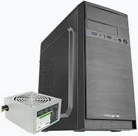
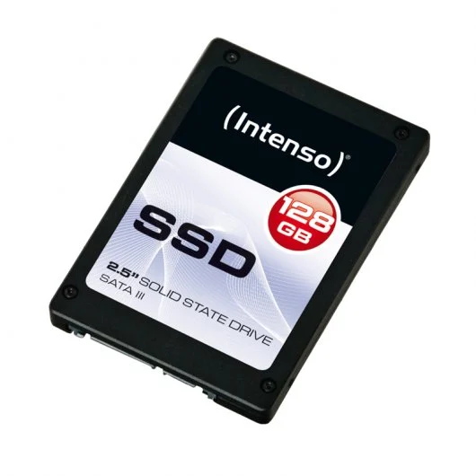
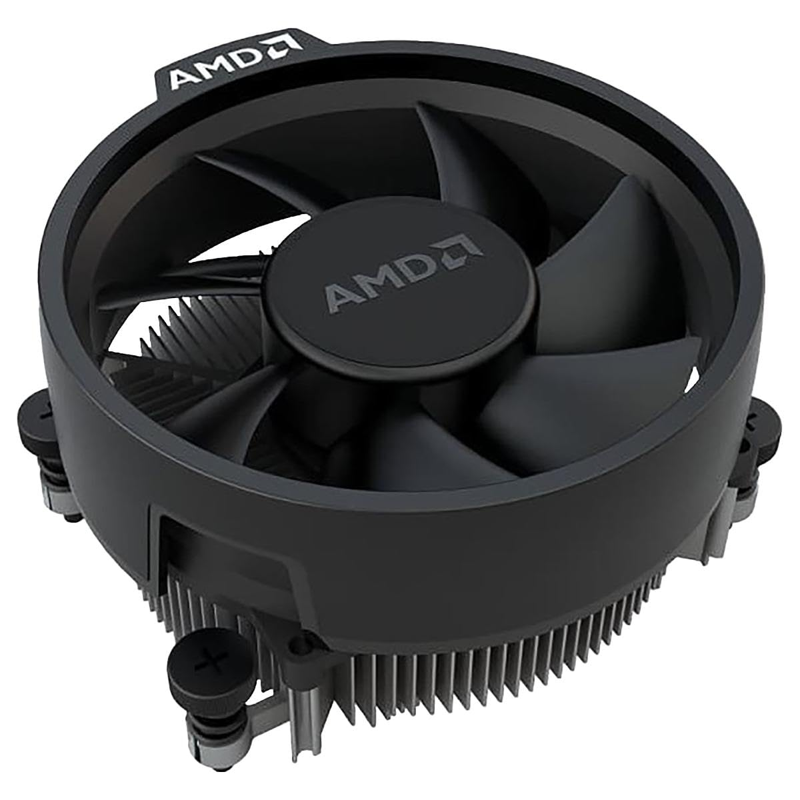
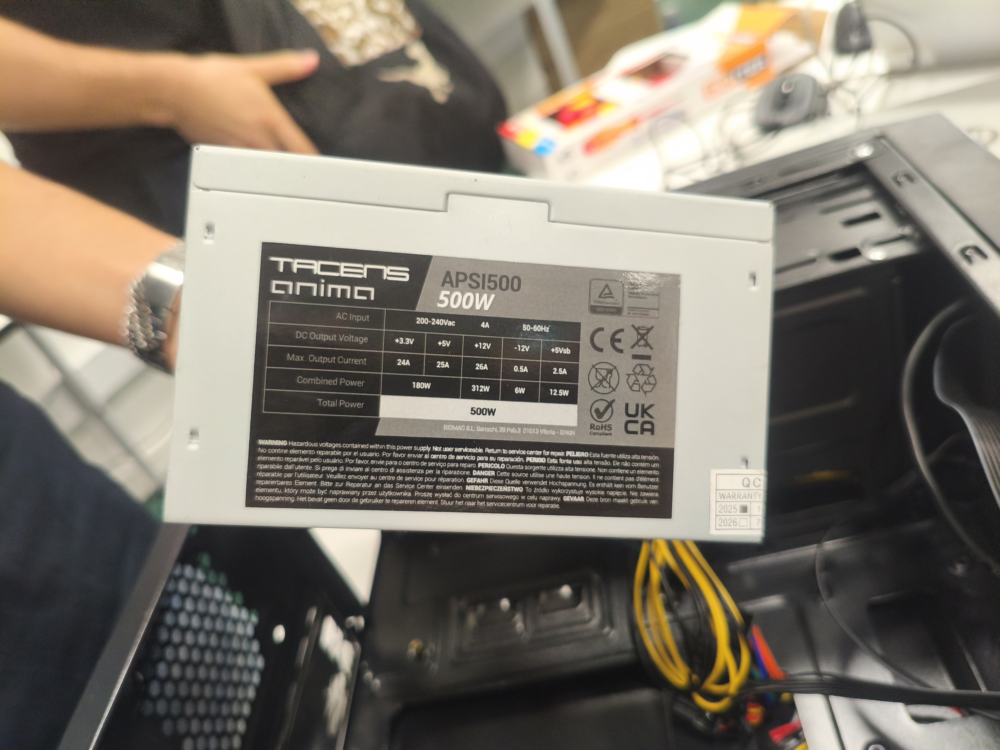

| ID |
Categoría |
Marca |
Modelo |
Estado |
Cantidad |
Especificaciones |
Imagen |
| Parámetro |
Valor |
| PR_01 |
Procesador |
AMD |
AMD Athlon™ 3000G |
Funciona |
1 |
Nombre |
AMD Athlon™ 3000G |

|
| Familia | AMD Athlon™ Processors |
| Serie | AMD Athlon™ Desktop Processors with Radeon™ Graphics |
| Formato | Desktop |
| Nombre de código anterior | Dali |
| N.º de núcleos de CPU | 2 |
| N.º de subprocesos | 4 |
| Reloj base | 3.5GHz |
| Caché L1 | 192KB |
| Caché L2 | 1MB |
| Caché L3 | 4MB |
| TDP predeterminada | 35W |
| Tecnología de procesador para núcleos de CPU | 14nm |
| Desbloqueado para overclocking | Sí |
| Socket de CPU | AM4 |
| Temperatura de funcionamiento máxima (Tjmax) | 95°C |
| Compatibilidad con SO | Windows 11 - 64-Bit, Windows 10 - 64-Bit, RHEL x86 64-Bit, Ubuntu x86 64-Bit |
| RAM_02 |
RAM |
XPG |
GAMMIX D35 DDR4 |
Funciona |
1 |
Lighting |
Non-RGB |

|
| Tipo de memoria | DDR4 |
| Factor de forma | U-DIMM |
| Colores | Negro / Blanco |
| Rank | 8GB / 16GB |
| Velocidades | 3200, 3600 |
| Latencias CAS Típicas | 16 |
| Voltaje de Funcionamiento de Prueba | 1,35V |
| Velocidad SPD | 2666 MT/s |
| SPD CAS Latency | 19-19-19-43 |
| Voltaje de Funcionamiento SPD | 1.2V |
| Temperatura de operación | De 0 °C a 85 °C |
| Dimensions ( L x W x H ) | 133.35 x 34 x 5.9mm |
| Weight | 27.34g / 28.41g / 29.27g |
| Garantía | Garantía limitada |
| CAJA_00 |
Chasis |
Tacens |
AC4500 |
Funciona |
1 |
Peso |
2800 g |

|
| Dimensiones | 350 x 315 x 165 mm |
| Tamaño | Minitorre |
| Formato placas base | MicroATX / Mini-ITX |
| Longitud máxima VGA | 310 mm |
| Altura máxima cooler CPU | 155 mm |
| Soporte fuente de alimentación | ATX PS/3 | ATX PS/2 |
| Bahías externas | 1x 5.25" + 1x 3.5" |
| Bahías internas | 3x 3.5" HDD + 3x 2.5" SSD |
| Slots de expansión | 4 |
| Ventilador frontal | 1x 120 mm |
| Ventilador lateral | 1x 120 mm / 80 mm |
| Ventilador trasero | 1x 80 mm |
| Puertos I/O | USB 3.0 x1 / USB 2.0 x1 / HD Audio + Mic |
| Fuente incorporada | 500W PSU |
| Conectores Fuente de alimentación incluida | 1x ATX 20+4 pin / 1x EPS 4+4 pin / 3x SATA / 2x PATA |
| PB_03 |
PLACA BASE |
GIGABYTE |
AMD A520 Ultra Durable Motherboard with GbE LAN with Bandwidth Management, PCIe 3.0 x4 M.2, Smart Fan 5, Anti-Sulfur Resistors Design |
Funciona |
1 |
Procesador |
AMD Socket AM4, support for: AMD Ryzen™ 5000 G-Series Processors/ AMD Ryzen™ 5000 Series Processors/ AMD Ryzen™ 4000 G-Series Processors/ AMD Ryzen™ 3000 and Ryzen™ |

|
| Chipset | AMD A520 |
| Memoria | 2 x DDR4 DIMM sockets supporting up to 64 GB (32 GB single DIMM capacity) of system memory
Support for DDR4 5100(O.C.) / 4800(O.C.) / 4600(O.C.) / 4400(O.C.) / 4266(O.C.) / 4133(O.C.) / 4000(O.C.) / 3866(O.C.) / 3733(O.C.) / 3600(O.C.) / 3466(O.C.) / 3400(O.C.) / 3200 / 2933 / 2667 / 2400 / 2133 MHz memory modules
Dual channel memory architecture
Support for ECC Un-buffered DIMM 1Rx8/2Rx8 memory modules (operate in non-ECC mode)
Support for non-ECC Un-buffered DIMM 1Rx8/2Rx8/1Rx16 memory modules
Support for Extreme Memory Profile (XMP) memory modules |
| Gráfica Integrada | Integrated Graphics Processor:
1 x D-Sub port, supporting a maximum resolution of 1920x1200@60 Hz
1 x HDMI port, supporting a maximum resolution of 4096x2160@60 Hz
* Support for HDMI 2.1 version, HDCP 2.3, and HDR.
Maximum shared memory of 16 GB |
| Audio | Realtek® Audio CODEC
High Definition Audio
2/4/5.1/7.1-channel |
| LAN | Realtek® GbE LAN chip (1 Gbps/100 Mbps) |
| Zócalos de Expansión | CPU:
1 x PCI Express x16 slot, supporting PCIe 3.0 and running at x16
Chipset:
1 x PCI Express x1 slot, supporting PCIe 3.0 and running at x1 |
| Interfaz de almacenamiento | CPU:
1 x M.2 connector (Socket 3, M key, type 2280 SATA and PCIe 3.0 x4/x2 SSD support)
Chipset:
4 x SATA 6Gb/s connectors
Support for RAID 0, RAID 1, and RAID 10 |
| USB | CPU:
4 x USB 3.2 Gen 1 ports on the back panel
Chipset:
2 x USB 3.2 Gen 1 ports available through the internal USB header
6 x USB 2.0/1.1 ports (2 ports on the back panel, 4 ports available through the internal USB headers) |
| Conectores Internos E/S | 1 x 24-pin ATX main power connector
1 x 8-pin ATX 12V power connector
1 x CPU fan header
1 x system fan header
1 x M.2 Socket 3 connector
4 x SATA 6Gb/s connectors
1 x front panel header
1 x front panel audio header
1 x USB 3.2 Gen 1 header
2 x USB 2.0/1.1 headers
1 x Trusted Platform Module (TPM) header (2x6 pin, for the GC-TPM2.0_S module only)
1 x speaker header
1 x Clear CMOS jumper
1 x chassis intrusion header |
| Panel E/S Trasero | 1 x PS/2 keyboard/mouse port
1 x D-Sub port
1 x HDMI port
4 x USB 3.2 Gen 1 ports
2 x USB 2.0/1.1 ports
1 x RJ-45 port
3 x audio jacks |
| Controlador E/S | iTE® I/O Controller Chip |
| Monitorización Hardware | Voltage detection
Temperature detection
Fan speed detection
Fan fail warning
Fan speed control |
| BIOS | 1 x 128 Mbit flash
Use of licensed AMI UEFI BIOS
PnP 1.0a, DMI 2.7, WfM 2.0, SM BIOS 2.7, ACPI 5.0 |
| Otras Características | Support for APP Center
* Available applications in APP Center may vary by motherboard model. Supported functions of each application may also vary depending on motherboard specifications.
@BIOS
EasyTune
Smart Backup
System Information Viewer
Support for Q-Flash
Support for Xpress Install |
| Bundled Software | Norton® Internet Security (OEM version)
LAN bandwidth management software |
| Sistema Operativo | Support for Windows 11 64-bit
Support for Windows 10 64-bit |
| Formato | Micro ATX Form Factor; 23.3cm x 19.8cm |
| Observaciones | Due to different Linux support condition provided by chipset vendors, please download Linux driver from chipset vendors' website or 3rd party website.
Most hardware/software vendors may no longer offer drivers to support Win9X/ME/2000/XP. If drivers are available from the vendors, we will update them on the GIGABYTE website. |
| SSD_04 |
DISCO DURO |
INTENSO |
Intenso Top SSD 128 GB SATA3 |
Funciona |
1 |
Capacidades |
128 GB | 256 GB | 512 GB |

|
| Factor forma | 2,5" |
| NAND Flash | High-Speed MLC |
| Interfaz | SATA III (6 Gbps) |
| Controlador | Controlador Estándar |
| Prestación de lectura | hasta 300 MB/s (128GB)
hasta 400 MB/s (256 GB)
hasta 490 MB/s (512 GB) |
| Prestación de escritura: | hasta 520 MB/s |
| Propiedades | Bajo consumo energético
Resistencia shock (1500 G / 0.5 ms)
Operación silenciosa |
| Funciones | SMART Command Support
TRIM Command Support |
| DIS_05 |
DISIPADOR DE CALOR |
AMD |
Ventilador CPU Refrigeración aire AMD Socket AM4 92mm Wraith Stealth negro 4-pin |
Funciona |
1 |
Marca |
AMD |

|
| Modelo | Wraith Stealth |
| Tipo | Refrigerador de aire (Top Blower) |
| Socket compatible | AM4 |
| Material del radiador | Aluminio |
| Diámetro ventilador | 92 mm |
| Número de ventiladores | 1 |
| Conector ventilador | 4 pines |
| Color | Negro |
| Iluminación LED | No |
| Peso | 400 g |
| Garantía | 36 meses (Bring-In) |
| Rango de ventas | 146 de 1205 en CPU Kühler |
| Compromiso medioambiental | SBTi |
| FA_06 |
FUENTE DE ALIMENTACIÓN |
TACENS |
Tacens Anima APIII500 Fuente Alimentación PC ATX 500W 85% Bronze Ventilador 12cm Negro |
Funciona |
1 |
Puertos e Interfaces |
Corriente máxima de entrada: 4A
Voltaje de entrada: 200-240V 50/60Hz
Voltaje/Corriente de salida: +3.3V - 24A / +5V - 25A / +12V - 26A / -12V - 0.5A / +5VSB - 2.5A
Corrección del factor de potencia tipo PFC: Pasivo
Conectores: 1x ATX MB 24 PIN / 1x EPS +12V 4+4 PIN / 2x SATA / 2x Molex 4 PIN |

|
| Peso y dimensiones | Ancho: 145 mm
Profundidad: 150 mm
Altura: 85 mm
Peso: 950 g |
| Enfriamiento | Número de ventiladores: 1
Diámetro de ventilador: 12 cm
Ubicación de ventilador: Superior |
| Diseño | Color del producto: Negro
Cableado: Cables planos extra largos |
| Desempeño | Utilizar con: PC
Factor de forma de fuente de alimentación (PSU): ATX
Potencia: 500W
Nivel de ruido: 14dB
Certificaciones: ATX12V, Haswell Ready, CE, ROHS
Protecciones: OPP, OVP, UVP, SCP |